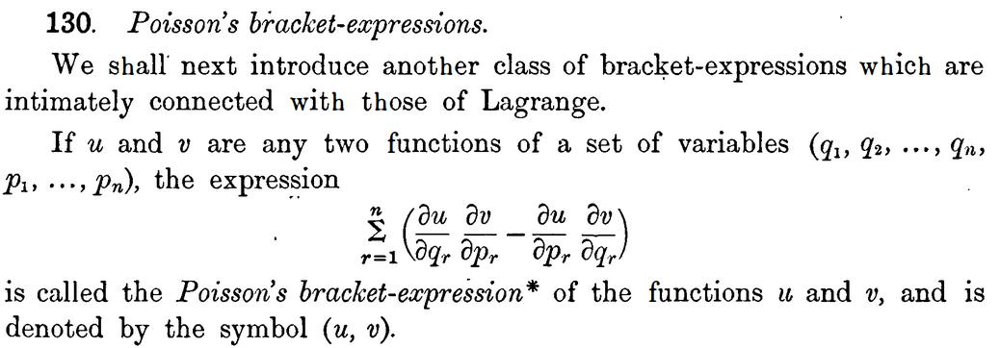

April 14, 2024
Dirac and the Poisson bracket expression
Dirac lecture 1 of 4 - Quantum Mechanics
Dirac's first lecture of four on quantum mechanics delivered in 1975 in Christchurch, New Zealand.
Video:
https://youtu.be/2GwctBldBvU?si=l9uMqB6-GOubD1CO
At around 19 minutes into the video, Dirac says that he had read Heisenberg's paper on a non-commutable
equation,
and when he went on his Sunday walk, he remembered that he had seen something similar
named "Poisson brackets"
in the book
Whittaker, E. T. (1904). A treatise on the analytical dynamics of particles and rigid bodies: with an
introduction to the problem of three bodies
Here is a link to the Poisson bracket equation he mentions at around 19 minutes into the video
https://www.forgottenbooks.com/en/readbook/ATreatiseontheAnalyticalDynamicsofParticlesandRigidBodies_10037992#310
